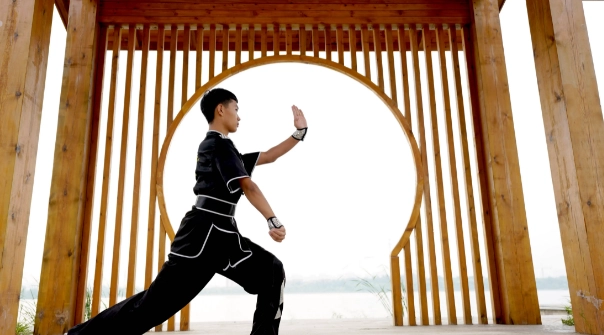
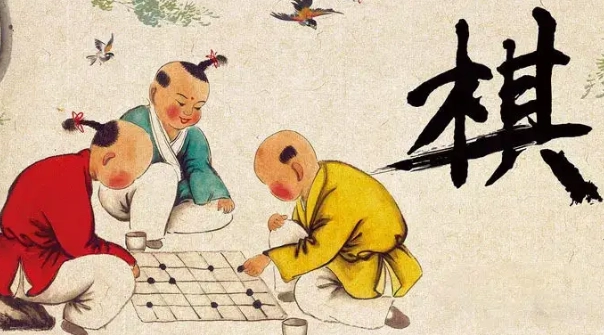
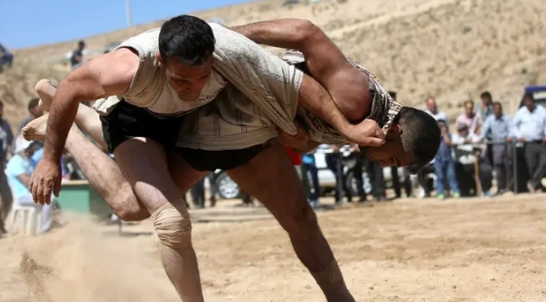
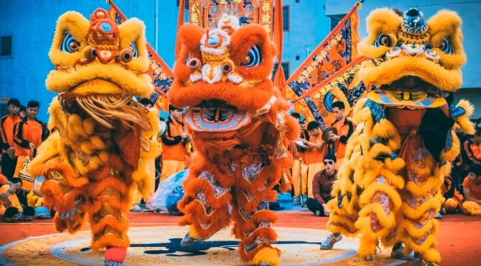
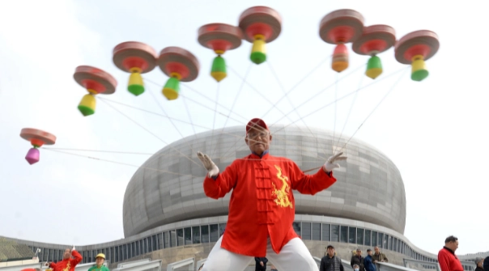
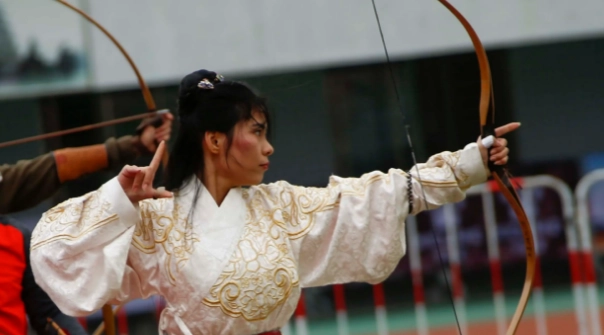
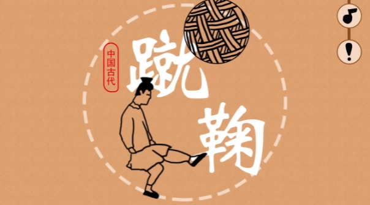
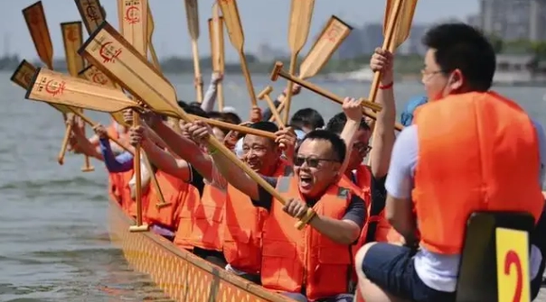
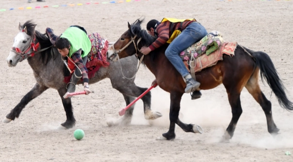
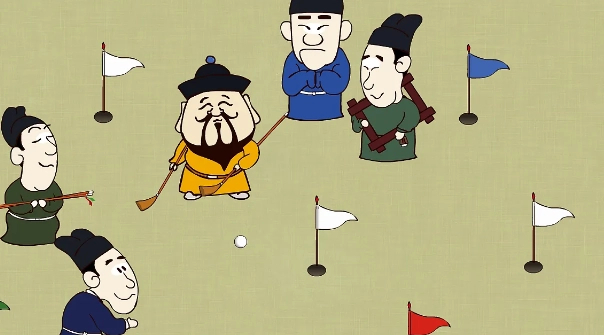

-

武术
有着悠久的历史，最早可以追溯到商周时期，具有极其广泛的群众基础，是中国劳动人民在长期的社会实践中不断积累和丰富起来的一项宝贵的文化遗产。是中华人民的优秀文化遗产之一。
-

棋术
中国棋文化来自于中国，博弈是东方文化生活的重要组成部分，它不但不同于一般的消遣游戏，还影响和陶冶着人们的道德观念、行为准则、审美趣味和思维方式。棋术分为象棋、围棋。
-

摔跤
中国最古老的体育项目之一。 古代称为角力、角抵、相扑、争跤等。早在五千多年前的黄帝时代就有了古代摔跤活动。晋代，多在元宵节举行摔跤比赛。唐代多在春秋两季举行比赛，也作为宫廷娱乐的项目。五代时期，摔跤技术强调轻便敏捷 。宋代还出现了女子摔跤。民间有摔跤组织角抵社。
-

舞狮
中国舞狮运动源自于具有悠久历史和灿烂文化的中华民族，深受中华民族广大人民群众的喜爱和青睐。舞狮运动的形式丰富多彩，凡是和中国狮子有关的活动大都纳入在舞狮运动的范围之内。由于中国舞狮运动和舞龙运动有着很大的内在相通性，为了便于广泛地开展舞狮和舞龙运动，国际上成立了国际龙狮总会，国家体育总局成立了中国龙狮运动协会，旨在将中国舞龙和舞狮运动协调起来。
-

空竹
空竹是中国传统文化苑中一株灿烂的花朵。空竹古称“胡敲”，也叫“地铃’、“空钟”、“风葫芦”，济南俗称“老牛”。中国民间游艺活动。可见于全国各地，天津、北京及辽宁、吉林、黑龙江等地尤为盛行。
-

射箭
传统射箭，是指君子六艺的“射”，《礼记.射义》：“射者，仁之道也。射求正诸己，己正而后发；发而不中，则不怨胜己者，反求诸己而已矣。孔子曰：君子无所争，必也射乎。揖让而升，下而饮，其争也君子。” 通过射箭去时时处处留心自己，修正自己，对自己有办法，同时培养恭敬礼让的品德。
-

蹴鞠
蹴鞠，又名“蹋鞠”、“蹴球”、“蹴圆”、“筑球”、“踢圆”等，“蹴”有用脚蹴、蹋、踢的含义，“鞠”最早系外包皮革、内实米糠的球。“蹴鞠”就是指古人以脚蹴、蹋、踢皮球的活动，类似今日的足球。据史料记载，早在战国时期中国民间就流行娱乐性的蹴鞠游戏，而从汉代开始又成为兵家练兵之法，宋代又出现了蹴鞠组织与蹴鞠艺人，清代开始流行冰上蹙鞠。
-

龙舟
龙舟，是端午节竞渡用的龙形船。赛龙舟是汉族传统节日端午节的主要习俗，最初是中国人民祛病防疫的节日，江浙地区春秋之前有在农历五月初五以龙舟竞渡形式举行龙图腾祭祀的习俗；后因诗人屈原在这一天逝世，便成了中国汉族人民纪念屈原的传统节日习俗，也是汉族龙图腾文化的代表之一。
-

马球
马球在中国古代叫“击鞠”，发明始于汉代，兴盛于唐宋，在东汉后期，曹植《名都篇》中就有“连骑击鞠壤，巧捷惟万端”的诗句来描写当时人打马球的情形。马球，指的是骑在马上，用马球杆击球入门的一种体育活动。
-

捶丸
“捶”即击打，“丸”即小球。捶丸，即是我国古代以球杖击球入穴的一种运动项目。前身可能是唐代马球中的步打球。当时的步打球类似现代的曲棍球，有较强的对抗性。到了宋朝，步打球由原来的同场对抗性竞赛逐渐演变为依次击球的非对抗性比赛，球门改为球穴，名称也随之改称“捶丸”。